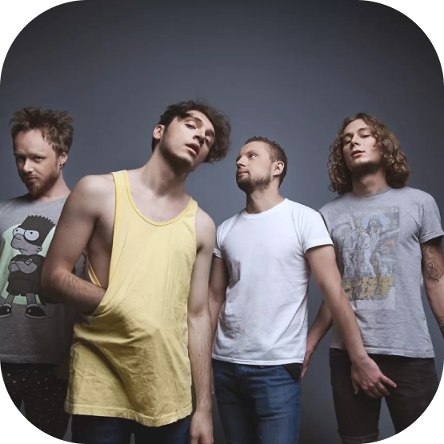

руппа была основана в 2010 году Юрием Капланом. Группе присущи такие жанры как: рок, панк-рок и камеди-рок. Группа выпустила 3 альбома. И распалась в мае 2019 года. Группа была известна благодаря таким трекам как: “Всё решено”, “Кайен”, “Наше лето” и другие.
Валентин Стрыкало -

Факты
Солист группы- Юрий Каплан известен благодаря обращениям к знаменитостям под именем “Валентин стрыкало из села бурильцево. Он записал видеообращения к : Тимати, Диме Билану, Потапу и Насте Каменских, Чаю вдвоем и другим
Песня Кайен
Солист группы -


Юрий Каплан родился второго октября 1988 года. В 2011 году состоял в группе “Водичка пузырьки”. Выпустив ткие песни как: “Гори”, “Светлана”, “Без меня” и т.д. Будучи солистом в группе “Валентин Стрыкало” исполнил песни в дебютно альбоме - “смирись и раслабься”. Песни из данного льбома можно послушать выше, а аватарку альбома вы видете слева.